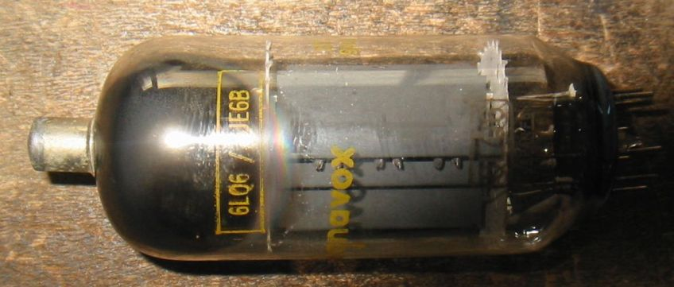
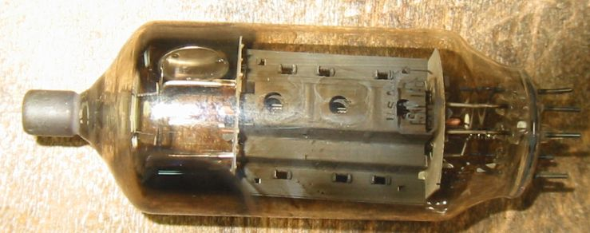
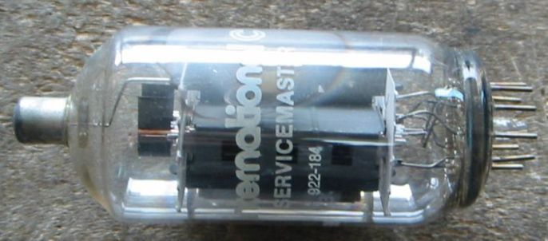
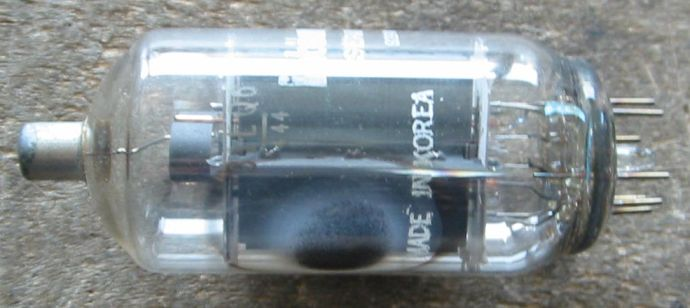
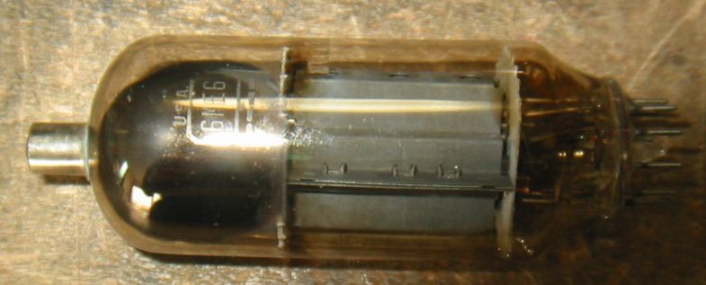
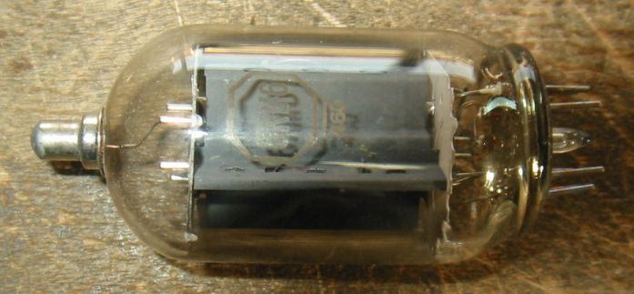

ノバー管
6LQ6/6JE6B この球はプレート許容損失30Wで6JS6Bより少し大きく、200Wの短時間オーバーロードが
許されています。
Ef/If=6.3V/2.3A、Ep/Pp=990V(peak)/30W、Esg/Psg=220V/5W、Gm=9600、μ2=3(GE)
OverloardPb=200W 短時間

6MJ6/6LQ6/6JE6C Top-Capが変わっていて高圧レギュレータ管の6BK4や高圧整流管3A3のような
しっかりしたものになっています。かなり酷使されたようでガラスが黒くなっています。
しかし新品とほとんど変わりなく動作するのには驚かされます。
Ef/If=6.3V/2.3A、Ep/Pp=990V(peak)/30W、Esg/Psg=220V/5W、Gm=9600、μ2=3(GE)

31LQ6 MADE IN KOREA

RCA 6ME6
Ef/If=6.3V/2.3A、Ep/Pp=990V(peak)/30W、Esg/Psg=220V/5W、Gm=9600、μ2=3.5 (RCA)
OverloardPb=200W 40秒以下

Westinghouse 6KM6
Ef/If=6.3V/1.6A、Ep/Pp=770/20W、Esg/Psg=220V/3.5W、Gm=9500、μ2=4 (WH)

TV水平出力管(ノバー管)のページに戻る